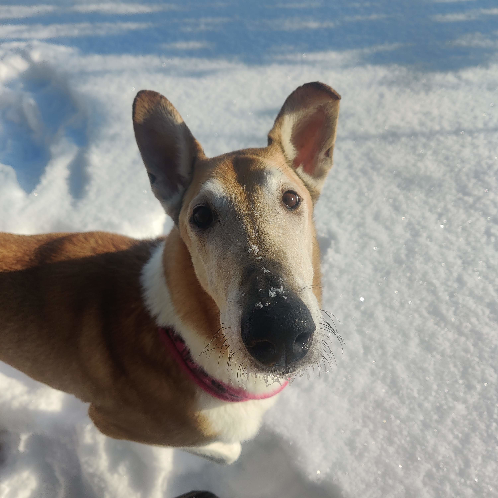
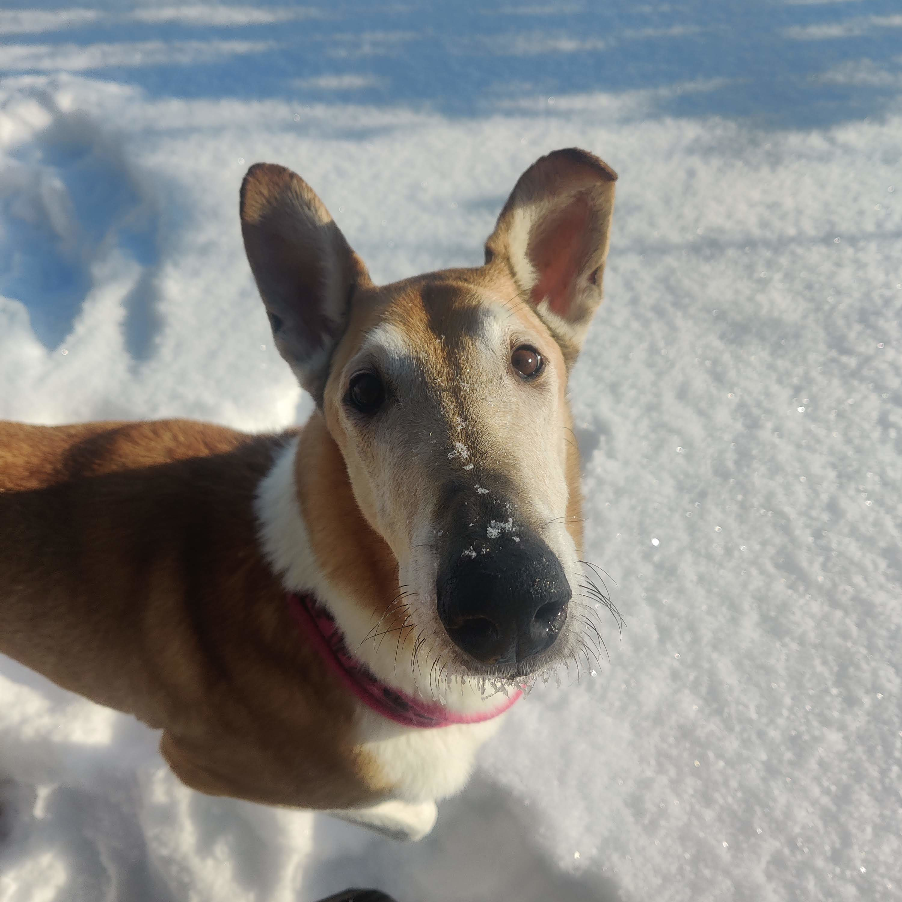
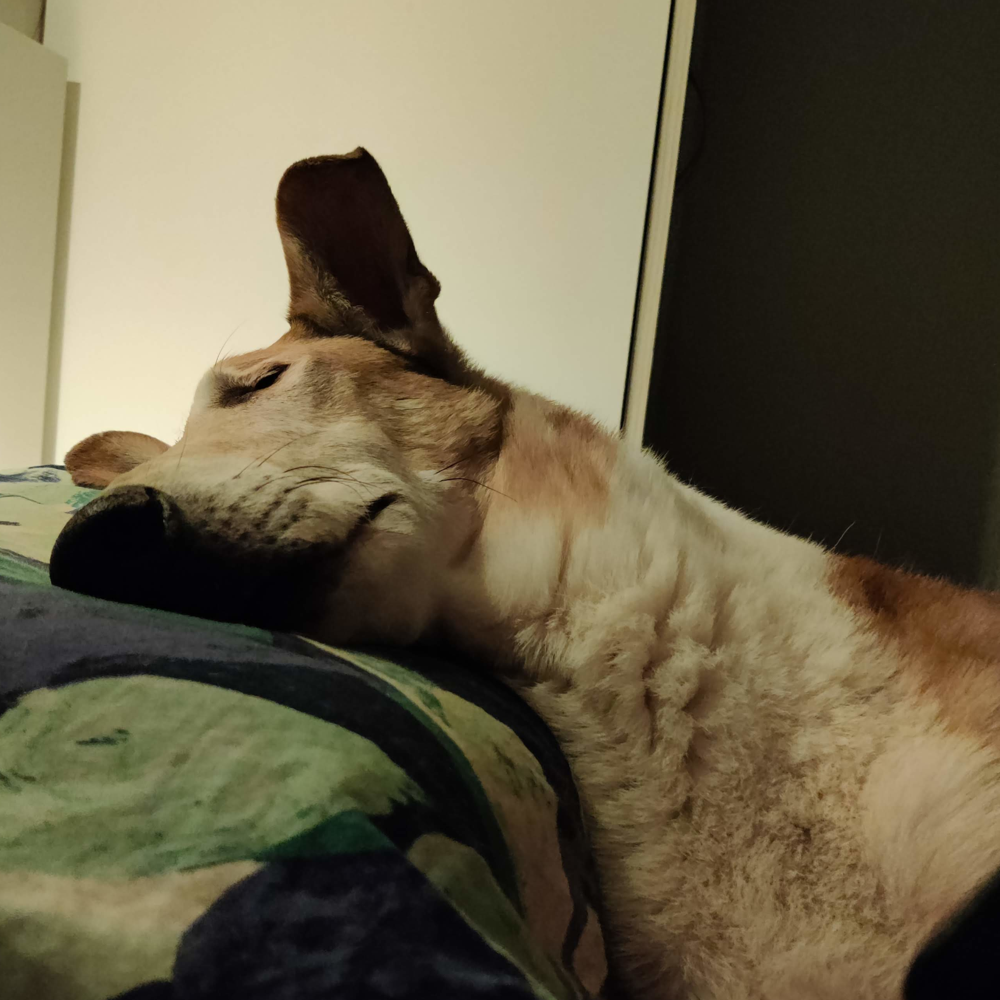
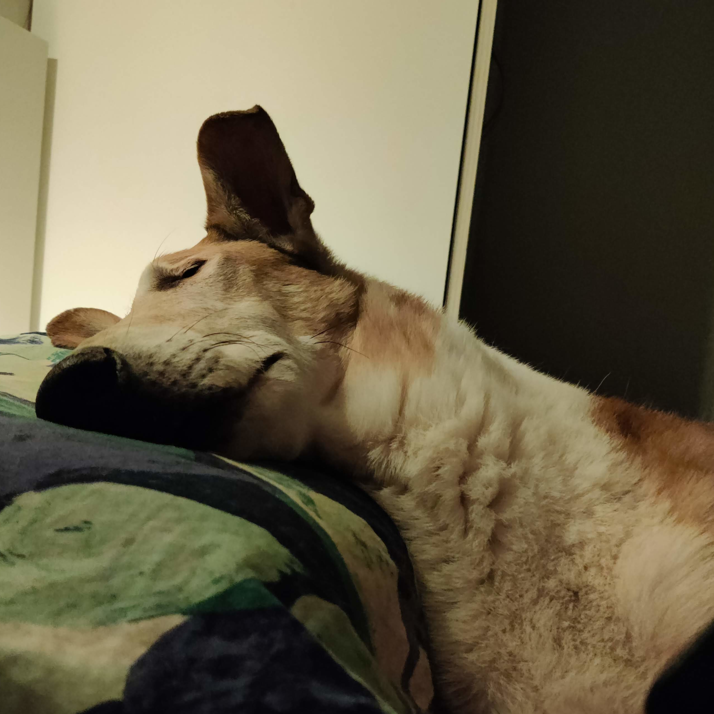

Käpälä Craft

 



 



Late (10 v) - Sileäkarvainen Collie
- Syntynyt: 06.05.2013
- Luonne: Kotikoira, joka ei sano ei toiminnalle, paitsi jos se liittyy veteen. Kaikkien ihmisten ystävä, erityisesti ruuan ystävä, pieni hupulainen.
- Harrastushistoria: Kokeillut erilaisia lajeja ennen kotikoiraksi tuloa, kuten palveluskoiralajien viesti, agility ja näyttely (vaikka siellä oltiin liian isoksi luultuina).
Late on pieni suuri hupulainen, aina menossa mukana ja aina on hyvä paikka kivettyä paikoilleen. Näyttely hommista sen verran sanon että ei sinne muka näin iso ja komea ukko kelvannut (karusellissa kuva minusta veljen kanssa 6kk ikäisinä), sanoivat että korvat osoittaa minne sattuu ja liian iso. Minusta hän on juuri sopiva, entä sinusta?

Sera (8 v) - Beauceron/Beaucenpaimenkoira
- Syntynyt: 21.02.2015
- Luonne: Mamman kainalokoira, aina valmiina pienelle välipalalle.
- Harrastukset: Vesipelastus, tottelevaisuus (toko)
Tällä hetkellä vedellään menemään Seran kanssa tokoa ja vesipelastusta. Aikaisemmin harrastettiin myös hakua, mutta tajuttiin, että paukut eivät ole ihan meidän juttu. No biggie – keskitytään niihin juttuihin, missä meillä on tassut täydessä iskussa.
Elämässäni on enemmän pyöritystä kuin tivolissa. Pienet lapset, työjutut ja
uuden ammatin opiskelu pitävät minut liikkeessä. Koiraharrastukset saattavat
vähän välillä unohtua, mutta onneksi minulla on kaksi kaverusta – iki-ihanat
koirakaverukset – joiden kanssa ihan perus metsälenkki on täydellinen seikkailu.
Joskus on aika vaihtaa suuntaa ja ottaa rennommin. Arkeen sukeltaminen
ei ole aina helppoa, mutta kun päästään ulos raittiiseen ilmaan, niin kaikki
muu unohtuu. Vähän kuin elämä olisi yksi suuri villi temmellyskenttä!
Tule mukaan sekoittelemaan pakkaa! Jätä rohkeasti viestiä tai jaa omia
koirahurttailuja – täällä ollaan valmiina uusiin seikkailuihin!
Kiitos, että olet tullut tsekkailemaan tänne asti! 🐾